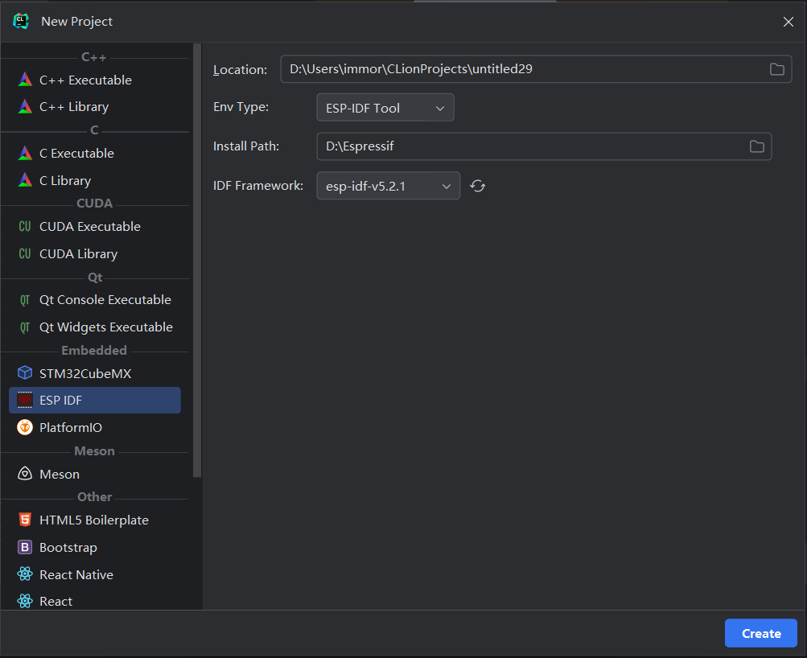

新建项目
windows离线ESP-IDF
ESP-IDF 工具安装器 安装
在该地址下载对应版本的ESP-IDF
选择一个 Offline Installer(离线安装器) ，无需使用加速器。
下载完成按向导安装，可以勾选附加的驱动。
新建项目 新建项目类型为ESP-IDF的项目，选择
Env Type为ESP-IDF TOOL 再选择上一步离线包安装的路径如:
D:\Espressif。
选择正确会自己加载已安装的ESP-IDF框架。
然后创建项目即可。
源码安装
通过克隆 ESP-IDF项目，并在对应平台使用install脚本安装ESP-IDF。这样可以通过git更新IDF。
windows下源码安装
克隆代码后。 参考在 Windows 环境下更新 ESP-IDF 工具 使用install脚本进行安装。
并将Env Type 选为ESP-IDF
再选择对应的源码路径。
linux(和MACOS)
需要手动安装一些组件，再使用install脚本。 参考Linux 和 macOS 平台工具链的标准设置
安装完成之后创建ESP-IDF项目时选择源码路径即可。
注意事项
在创建项目之后，会执行set-target,暂无法控制使其百分百成功，这个时候报错不代表失败，可以等待cmake窗是否会出现。
我们也可以选择再次运行set-target
Last modified: 16 九月 2024